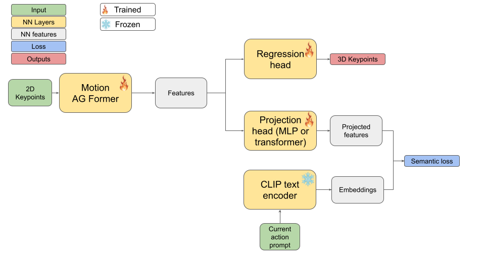
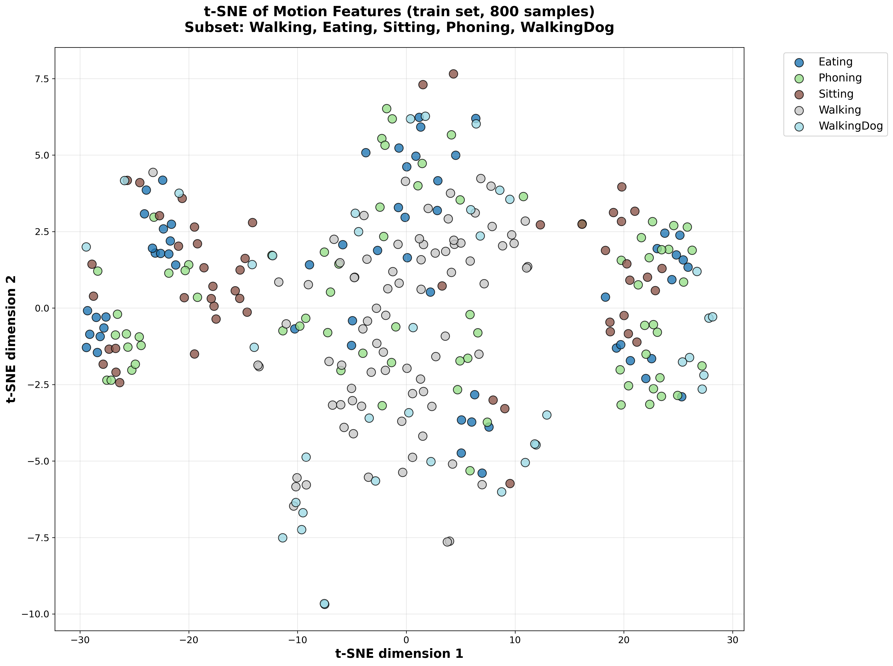
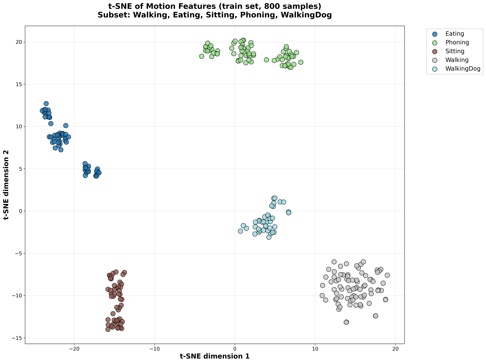
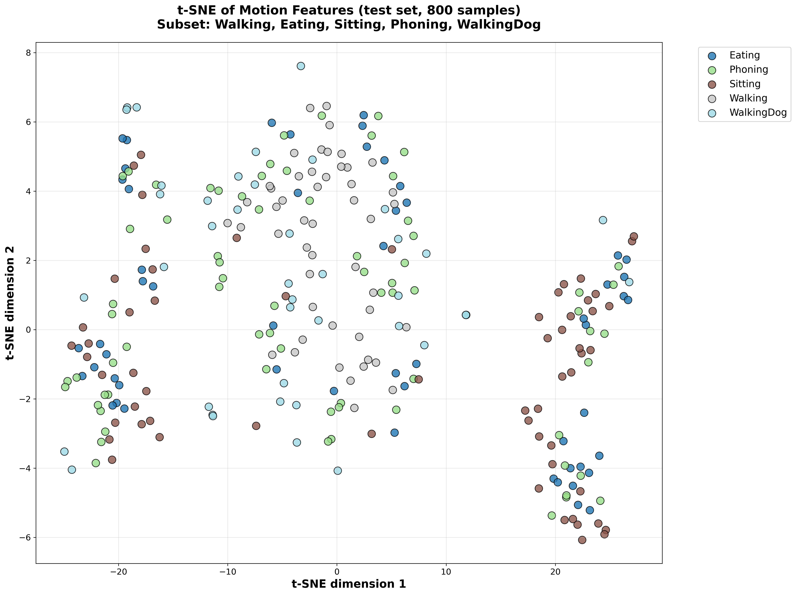
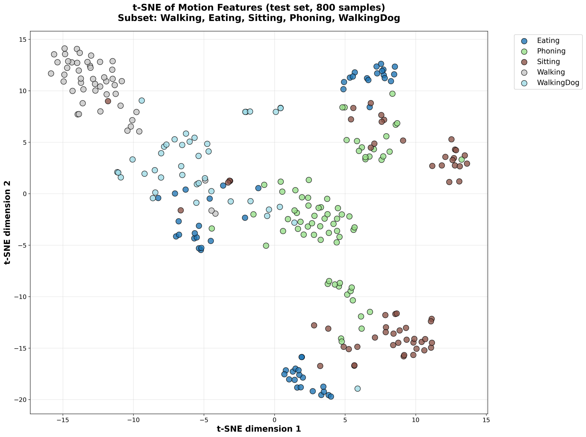

Project Description
The Task
Creating a comprehensive human action dataset with compatibility to NTU-RGBD action classes. Our approach leverages existing advanced methods to generate both 2D pose data and 3D skeletal information from video sequences.
- NTU-RGBD action compatibility
- 2D pose extraction using state-of-the-art methods
- 3D skeletal reconstruction algorithms
- Standardized action labeling system
Significance
Building this dataset to align with established benchmarks ensures our raw data is high-quality, organized, and ready for future AI applications:
- Methodological standardization: Actions match the labels from NTU-RGBD.
- Cross-domain generalization: Unique movement patterns of already existing actions.
- Transferability and compatibility: Action compatibility facilitates the future application of transfer-learning techniques.
- Benchmark interoperability: Consistency in action definitions ensure that findings can be directly compared to known benchmarks.
Demonstrator Purpose
This interactive viewer serves as a comprehensive exploration tool for researchers and developers to visualize, analyze, and understand the generated dataset contents and action classifications.
- Interactive dataset browsing
- Visual quality assessment
- Action category verification
- Visualization of some experimental results
Methodology
Data Collection
The dataset was collected inside the Precis building of the UPB campus with volunteer students as the main subjects for performing actions. Short sequences were recorded using simple camera hardware. The actions are compatible with those found in NTU-RGBD and for the same action, multiple subjects and recording locations were used. Additionally, besides actions found in NTU-RGBD, sequences of composite actions were recorded.
2D Skeleton Extraction
Many action recognition systems solely rely on 2D keypoints as inputs. To generate the 2D skeleton and keypoints for each recorded video, we used the HRNet method.
3D Skeleton Reconstruction
Since our dataset uses only RGB cameras for scene collection, ground truth 3D keypoints and skeletons are missing. These usually require complex suits for data collection. In order to generate data for 3D keypoints, we resort to a state of art approach for 3D liftup from 2D input sequences.
Custom method for few-shot action recognition
One of our current experiments relies on using a state of art approach for liftup and adding a semantic alignment loss to force internal representation to get close to tokenized verbal descriptions of actions. While this was initially intended for improving liftup performance, we observed it could be used for action understanding instead.

Dataset Exploration
Experimental Observations
| Model Dataset | Humans3.6M | MPI-INF-3DHP (Trained on Humans3.6M) | ||
|---|---|---|---|---|
| MPJPE (mm) ↓ | P-MPJPE (mm) ↓ | MPJPE (mm) ↓ | P-MPJPE (mm) ↓ | |
| MotionAGFormer-Small | 42.51 | 35.32 | 429.98 | 319.44 |
| MotionAGFormer-Small-Semantic | 43.25 | 35.62 | 398.92 | 292.11 |
Table 1: Performance comparison of MotionAGFormer models on 3D human pose estimation tasks. The semantic variant shows slightly improved cross-dataset generalization.
t-SNE Visualization of Latent Space
Training Set Latent Space

Without Semantic Loss

With Semantic Loss
Test Set Latent Space

Without Semantic Loss

With Semantic Loss
Figure 1: t-SNE visualization comparing latent space representations. The semantic loss model shows better separation of action classes in both training and test sets.